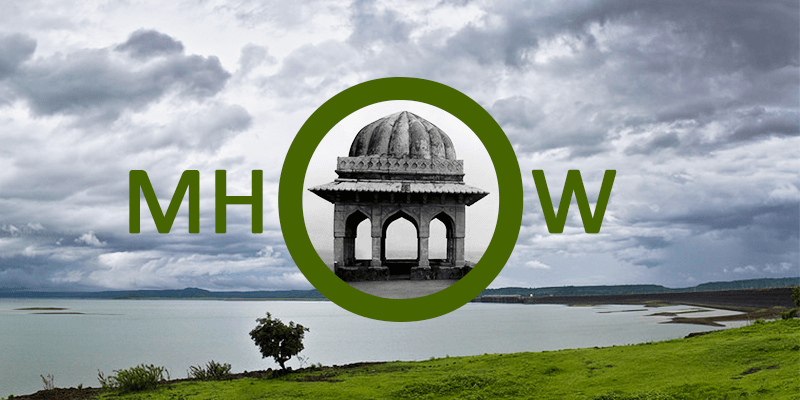

Mhow, officially known as Dr Ambedkar Nagar,[2] is a cantonment in the Indore District in Madhya Pradesh state of India. It is located 23 kilometres (14 mi) south of Indore city towards Mumbai on the Mumbai-Agra Road. The town was renamed as Dr Ambedkar Nagar in 2003, by the Government of Madhya Pradesh.
This cantonment town was founded in 1818 by John Malcolm as a result of the Treaty of Mandsaur between the English and the Holkars who were the Maratha Maharajas of Indore.
John Malcolm's forces had defeated the Holkars of the Maratha Confederacy at the Battle of Mahidpur in 1818. It was after this battle that the capital of the Holkars shifted from the town of Maheshwar on the banks of the Narmada to Indore. Mhow used to be the headquarters of the 5th (Mhow) Division of the Southern Command during the British Raj. Today this small town is associated with the Indian Army and with Bharat Ratna Dr. B. R. Ambedkar an economist, philosopher, jurist, anthropologist, Buddhist activist, a revolutionary, a prolific writer and a political leader who was born here. Mhow was a meter gauge railway district headquarters during the British Raj and even after 1947.[3] The irony is that Mhow finally has a broad gauge connection with Indore but regular train services are yet to commence. According to Hindu religious texts, Janapav Kuti near Mhow is said to be the birthplace[citation needed] of Parashurama, an avatar of Vishnu.
As of 2011 India census,[4] Mhow had a population of 85,023.
Males constitute 54% of the population and females 46%. Mhow has an average literacy rate of 72%, higher than the national average of 59.5%; male literacy is 78%, and female literacy is 65%. The Mhow Cantt Cantonment Board has population of 81,702 of which 43,888 are males while 37,814 are females as per report released by Census India 2011.
Population of Children with age of 0-6 is 9308 which is 11.39% of total population of Mhow Cantt (CB). In Mhow Cantt Cantonment Board, Female Sex Ratio is of 862 against state average of 931. Moreover, Child Sex Ratio in Mhow Cantt is around 908 compared to Madhya Pradesh state average of 918. Literacy rate of Mhow Cantt city is 85.78%; higher than state average of 69.32%. In Mhow Cantt, Male literacy is around 90.42% while female literacy rate is 80.37%.
As early as 1818, the Indian Army has had a presence in Mhow. Up until World War II, Mhow was the headquarters of the 5th Division of the Southern Army. According to local legend, Winston Churchill also spent a few months in Mhow when he was a subaltern serving with his regiment in India. The house on the mall where he is supposed to have lived, gradually crumbled due to neglect and age. It was pulled down and a jogger's park has been built on its grounds by the Infantry School. Mhow houses three premier training institutions of the Indian Army; The Infantry School, The Military College of Telecommunication Engineering (MCTE) and The Army War College. In addition to these institutes, Mhow is where Army Training Command or ARTRAC was born. ARTRAC was based in Mhow from 1991 to 1994, before it shifted to Shimla (Himachal Pradesh). At that time its General Officer Commanding in Chief (GOC-in-C) was Lt. General Shankar Roy Chowdhary who went on to become the Chief of Army Staff (COAS). Its first GOC-in-C was Lt. General A.S. Kalkat who had earlier commanded the Indian Peace Keeping Force (IPKF) in Sri Lanka. ARTRAC was housed in the campus of the present Army School. This was used as All Arms Wing of MCTE for many decades. It was originally built and used as the British Military Hospital (BMH).
Tourist spots in and around Mhow include:
(i) Patalpani waterfall
(ii) Mehndi Kund Water Fall
(iii) Choral Dam
(iv) Nakheri Dam
(v) Berchha Dam
(vi) Tinchha Water Fall
(vii) Janapav hill Temple
(viii) Jaam Gate
(ix) Bamniya Kund Water Fall
(x) Sitla Mata Water Fall in Manpur
(xi) Kala Kund
(xii) Choral River
(xiii) Raj Mahal of Raja Rajendra Singh Solanki
(xiv) Wanchoo Point